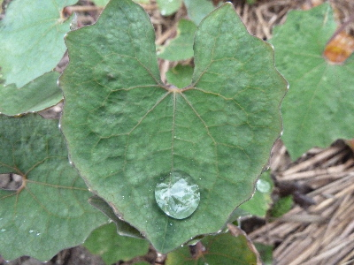
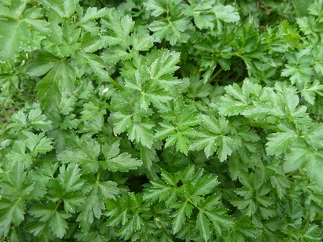
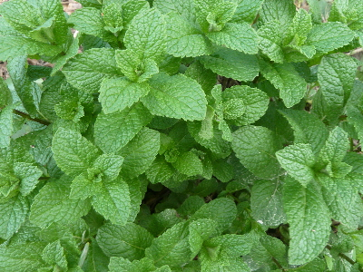
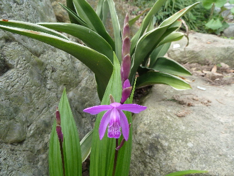

遊びで植物を育てよう
2016/04/03
蕗に雨粒が落ちて綺麗でした。
たいしたものではないですけど、
キラキラしてて綺麗でした。

こうゆうのを見るのもなかなかいいですね。
【4月TOP】
【日記TOP】
【園芸TOP】
2016/04/16
ハーブが育っていますが使えるかな？
ちょっとは欲しいけど沢山はいらないですよね。

パセリはお料理に少しずつ混ぜます。

ミントはどうしようかなー。
ネットで検索して使い方を見るんですが、これ作ろう！って思うものがないんですよね。
【4月TOP】
【日記TOP】
【園芸TOP】
216/04/16
紫蘭が咲き出しました。
庭の隅っこに丁度いいかな。

葉っぱも花も綺麗でいいですね。
【4月TOP】
【日記TOP】
【園芸TOP】
過去の日記
【2024年4月の日記】
【2023年4月の日記】
【2022年4月の日記】
【2021年4月の日記】
【2020年4月の日記】
【2019年4月の日記】
【2018年4月の日記】
【2017年4月の日記】
【2016年4月の日記】
【2015年4月の日記】
【2014年4月の日記】
【2013年4月の日記】
【4月TOP】
【日記TOP】
【園芸TOP】
畑仕事じゃないよ。
【おいしいものを食べよう。】【たくさん寝よう。】
【ソロ活をしよう!】【季節感のあることをしよう。】【動画視聴はほどほどに。】【当サイトの全てのコンテンツは無断転載禁止です。】